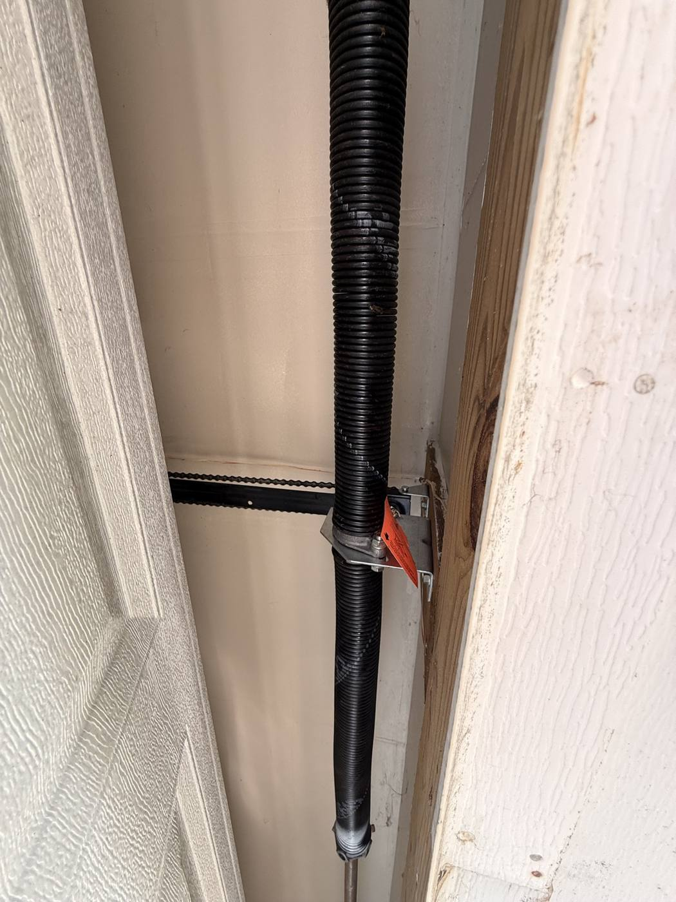

Home / Repair Services / Cable Repair
Door hanging crooked? Cable dangling off the drum? We replace lift cables and reset the door safely — usually the same day.
Lift cables are the steel wires that run from the bottom corners of your door up to the drums on the spring shaft. Together with the springs, they carry the full weight of the door — often 150 to 250 pounds. Over time the strands rust and fray, especially at the bottom bracket where moisture collects, and eventually one snaps or jumps off its drum. When that happens the door lifts unevenly, jams in the tracks or hangs crooked. Because the springs are still wound, a broken cable is one of the more dangerous garage door problems to tackle yourself.

If a cable has snapped, leave the door where it is, unplug the opener and do not try to lift it by hand. The springs are still under tension.
We clamp the door and tracks so nothing moves while the springs are unwound safely.
We always replace cables in pairs, and check the drums and bottom brackets — a worn drum or rusted bracket is often why the cable failed.
Springs are rewound, the door is balanced so it stays put halfway, and the opener force and safety-reverse are tested.
Lift cable replacement (both cables) starts at $150 and takes about an hour. Drums, bottom brackets or rollers add to that only if they are worn. If the cables failed because a spring broke, we quote both together — springs start at $290. You get the exact price before we start.
We strongly advise against it. Cable replacement means releasing and rewinding torsion springs, which stores enough energy to cause serious injury. It is a quick job for a technician with the right winding bars and clamps.
Both cables have the same age and wear. If one has failed, the other is usually close behind, and replacing them together keeps the door balanced.
Usually because a spring broke or lost tension, the door hit an obstruction, or the opener kept pulling after the door bound up. We find the cause so it does not happen again.
Yes, in most cases. Our trucks carry cables in common sizes, plus drums and bottom brackets.
Same-day service across Spartanburg County and Greenville County from our shop in Boiling Springs.
Related: Spring replacement · Off-track door repair · Tune-up & maintenance · All garage door repair services.
Send a photo of the problem and we will reply with what it is, the price range and when we can be there.